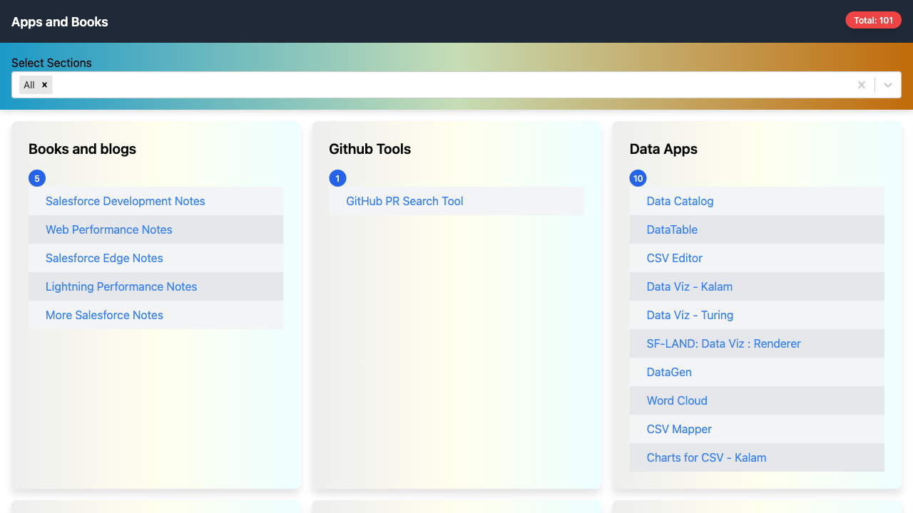

What is Playwright ?
Playwright is an open-source automation framework developed by Microsoft for end-to-end testing of web applications. It allows developers to simulate interactions with a web browser, such as clicking buttons, filling out forms, navigating between pages, and capturing screenshots. Playwright supports multiple browsers, including Chromium (Google Chrome), Firefox, and WebKit (Safari), and it can be used with various programming languages like JavaScript, TypeScript, Python, C#, and Java.
Key Features of Playwright:
- Cross-Browser Testing: Supports testing on different browsers (Chromium, Firefox, WebKit) with a single API.
- Headless Mode: Can run tests without a graphical user interface, making it faster and more efficient for CI/CD pipelines.
- Multiple Contexts: Allows for creating multiple, isolated browser contexts in a single browser instance, making parallel testing easier.
- Web Automation: Automates user interactions with web pages, such as clicking, typing, and navigating.
- Network Interception: Can intercept and modify network requests, useful for mocking API responses and testing edge cases.
- Visual Comparisons: Supports taking screenshots and comparing them to baseline images to catch visual regressions.
Typical Use Cases:
- End-to-End Testing: Automate user journeys and test the entire application flow.
- UI Testing: Validate that the user interface behaves as expected.
- Regression Testing: Ensure that new changes don't break existing functionality.
- Load Testing: Simulate multiple users interacting with the application simultaneously.
Playwright is particularly useful in modern web development because it provides robust, reliable, and scalable testing capabilities, making it easier for developers to catch bugs and ensure quality across different browsers and environments.
Hello World in Playwright
Here's a simple "Hello World" example using Playwright in JavaScript. This script will launch a browser, navigate to a web page, and print the title of the page.
1. Set Up Playwright
First, make sure you have Node.js installed. Then, install Playwright using npm:
npm init -y
npm install playwright
2. Create the Script
Create a file named hello-world.js and add the following code:
const { chromium, expect } = require('playwright');
(async () => {
// Launch a browser instance
const browser = await chromium.launch({ headless: false }); // Set to true for headless mode
const page = await browser.newPage();
const url = 'https://mohan-chinnappan-n5.github.io/apps/2/index.html';
// Navigate to a webpage
await page.goto(url);
// Print the title of the page
const title = await page.title();
console.log(`Page title: ${title}`);
expect(title).toBe('Apps and Books2');
// Close the browser
// await browser.close();
})();
3. Run the Script
Run the script using Node.js:
node hello-world.js

What This Script Does:
- Launches a Chromium browser instance.
- Opens a new page and navigates to
https://mohan-chinnappan-n5.github.io/apps/2/index.html. - Retrieves the title of the page.
- Captures a screenshot of the webpage and saves it as example-screenshot.png in the current directory.
- Prints the title to the console.

Using expect
import { chromium } from 'playwright';
import { test, expect } from '@playwright/test';
// Function to parse command-line arguments
function getArgument(argName) {
const index = process.argv.indexOf(argName);
return index !== -1 ? process.argv[index + 1] : null;
}
(async () => {
// Get the `--title` argument from the command line
const expectedTitle = getArgument('--title');
// Launch a browser instance
const browser = await chromium.launch({ headless: false }); // Set to true for headless mode
const page = await browser.newPage();
const url = 'https://mohan-chinnappan-n5.github.io/apps/2/index.html';
// Navigate to a webpage
await page.goto(url);
// Print the title of the page
const title = await page.title();
console.log(`Page title: ${title}`);
expect(title).toBe(expectedTitle);
// Take a screenshot and save it to the current directory
await page.screenshot( {path: 'homepage.png'});
// Close the browser
await browser.close();
})();
Running
➜ playwright-book node hello-world.mjs --title 'Apps and Books'
Page title: Apps and Books
Forcing error
➜ playwright-book node hello-world.mjs --title 'Apps and Books2'
Page title: Apps and Books
/Users/saromo/node_modules/playwright/lib/matchers/expect.js:198
if (!testInfo) return matcher.call(target, ...args);
^
Ge [Error]: expect(received).toBe(expected) // Object.is equality
Expected: "Apps and Books2"
Received: "Apps and Books"
at Proxy.<anonymous> (/Users/saromo/node_modules/playwright/lib/matchers/expect.js:198:37)
at file:///Users/uname/playwright-book/hello-world.mjs:28:17
{
matcherResult: {
actual: 'Apps and Books',
expected: 'Apps and Books2',
message: '\x1B[2mexpect(\x1B[22m\x1B[31mreceived\x1B[39m\x1B[2m).\x1B[22mtoBe\x1B[2m(\x1B[22m\x1B[32mexpected\x1B[39m\x1B[2m) // Object.is equality\x1B[22m\n' +
'\n' +
'Expected: \x1B[32m"Apps and Books\x1B[7m2\x1B[27m"\x1B[39m\n' +
'Received: \x1B[31m"Apps and Books"\x1B[39m',
name: 'toBe',
pass: false
}
}
Node.js v21.6.2
Automating Thank You Card Generation
- URL: Thank you card app
Data for the Thank you card
const greetings = [
{
to: "Dennis M Ritchie",
from: "Mohan Chinnappan",
msg: " I am writing to express my heartfelt appreciation and gratitude to you for creating C Language, Unix Operating System, Plan9 OS and many others",
template: "We stand on your shoulders! Thank you for your lovely and exceptional contributions."
},
{
to: "Ken Thompson",
from: "Mohan Chinnappan",
msg: " I am writing to express my heartfelt appreciation and gratitude to you for creating B Language, Unix Operating System, ed, grep, UTF-8, Go Language and many others",
template: "We stand on your shoulders! Thank you for your lovely and exceptional contributions."
},
{
to: "Elon Musk",
from: "Mohan Chinnappan",
msg: " I am writing to express my heartfelt appreciation and gratitude to you for efforts in Electric Vehicle Development, Rocket Technology" ,
template: "We stand on your shoulders! Thank you for your lovely and exceptional contributions."
},
{
to: "Dr. Adbul Kalam",
from: "Mohanasundaram Chinnappan",
msg: " I am writing to express my heartfelt appreciation and gratitude to you for efforts in guiding Indians to prepare for the future" ,
template: "We stand on your shoulders! Thank you for your lovely and exceptional contributions."
},
];
Test code
test("ThankYouCardsGen", async ({ page }) => {
for (const greeting of greetings) {
await page.goto("https://mohan-chinnappan-n5.github.io/apps/2/index.html");
await page.getByRole("link", { name: "Thank you! Card Generator" }).click();
await expect(page).toHaveTitle("Letter of Appreciation Generator");
await page.getByLabel("Recipient's Name:").fill(greeting.to);
await page.getByLabel("Recipient's Name:").press("Tab");
await page.getByLabel("Sender's Name:").fill(greeting.from);
await page .getByLabel("Appreciation Message:") .fill(greeting.msg);
await page .getByLabel("Appreciation Template:") .fill(greeting.template);
await page.getByRole("button", { name: "Generate Appreciation" }).click();
await page.getByRole("button", { name: "Create Image" }).click();
await page.screenshot({ path: `${(greeting.to).replace(' ','_')}.png`, fullPage: true });
}
});
Salesforce Login
Libraries used
Test code
/**
* Test: Salesforce Login
*
* Logs into Salesforce and navigates to the Home page.
*/
test("SFLogin", async ({ page }) => {
await performSfLogin(page);
});
Demo
Salesforce Add Accounts
Libraries used
Data for Account to be added
const sampleAccounts = [
{ name: "MCTest12", number: "121212" },
{ name: "MCTest13", number: "131313" },
];
Test code for adding Accounts
/**
* Adds a list of accounts to Salesforce.
*
* @param page - The Playwright page object used for navigation.
* @param data - Array of account objects containing name and number.
*/
const addAccounts = async (page, data) => {
for (const account of data) {
await performSfLogin(page); // login
await page.getByRole("link", { name: "Accounts" }).click();
await page.getByRole("button", { name: "New" }).click();
await page.getByLabel("*Account Name").fill(account.name);
await page.getByLabel("Account Number").fill(account.number);
await page.getByRole("button", { name: "Save", exact: true }).click();
}
};
/**
* Test: Add Accounts to Salesforce
*
* Adds a list of sample accounts to Salesforce.
*/
test("AddAccounts", async ({ page }) => {
test.setTimeout(SFSettings.SLOW);
await addAccounts(page, SFSettings.sampleAccounts);
});
Demo
Salesforce Set Email Deliverability
Libraries used
Test code
/**
* Configuration data for setting email deliverability in Salesforce.
* Defines the level of email deliverability access.
*/
static readonly emailDeliverabilityData = {
setTo: "2", // 0: No access, 1: System Email Only, 2: All email
};
/**
* Test: Set Email Deliverability
*
* Sets the email deliverability to the desired level in Salesforce.
*/
test("SetEmailDeliverability", async ({ page }) => {
const results = await performSfLoginSetup(page);
const instanceUrl = results.instanceUrl;
console.log(`Navigating to ${instanceUrl}`);
await page.goto(`${instanceUrl}/${SFSettings.emailDeliverabilityLink}`);
await page
.locator(SFSettings.emailDeliverabilityLocator)
.selectOption(SFSettings.emailDeliverabilityData.setTo);
await page.getByRole("button", { name: "Save" }).click();
});
Demo
Salesforce Password Reset for all users
Libraries used
Test code
/**
* Test: Password reset for all users of the org
*
* Sets the Password reset for all users of the org
* so when next time users log in, they will be asked to set their passwords to a new value.
*/
test("Security: PasswordReset for all users", async ({ page }) => {
const results = await performSfLoginSetup(page);
const instanceUrl = results.instanceUrl;
console.log(`Navigating to ${instanceUrl}`);
await page.goto(`${instanceUrl}/${SFSettings.passwordResetForAllUsersUrl}`);
await page.getByLabel('Expire all user passwords').check();
await page.getByRole('button', { name: 'Save' }).click();
});
Demo
Video editing tips
To cut or trim a webm file using ffmpeg, you can use the -ss (start time) and -t (duration) or -to (end time) options. Here's a basic example:
Steps to Cut a WebM File:
-
Install FFmpeg (if not already installed):
- On macOS:
brew install ffmpeg - On Ubuntu/Debian:
sudo apt-get install ffmpeg - On Windows: Download the binaries from ffmpeg.org and add them to your PATH.
- On macOS:
-
Cutting the WebM file:
The error message you're encountering indicates that the codecs used in the input WebM file are not supported by the WebM container format when trying to copy streams directly with the -c copy option.
How to Resolve This Issue
Re-encoding Example:
ffmpeg -i input.webm -ss 00:01:00 -to 00:02:00 -c:v libvpx -c:a libvorbis output.webm
-c:v libvpx: Re-encodes the video using the VP8 codec, which is compatible with WebM.-c:a libvorbis: Re-encodes the audio using the Vorbis codec, which is also compatible with WebM.-ss 00:01:00: Start time.-to 00:02:00: End time.
Explanation:
-c:v libvpx: Specifies that the video codec should be VP8 (compatible with WebM).-c:a libvorbis: Specifies that the audio codec should be Vorbis (compatible with WebM).output.webm: The output file.
If you prefer VP9 (a more efficient codec than VP8), you can use libvpx-vp9:
ffmpeg -i input.webm -ss 00:01:00 -to 00:02:00 -c:v libvpx-vp9 -c:a libopus output.webm
-c:v libvpx-vp9: Re-encodes the video using the VP9 codec.-c:a libopus: Re-encodes the audio using the Opus codec.
This approach should resolve the error and allow you to cut and save the WebM file properly.